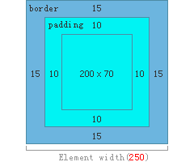

HTML CSS 面试题总结
HTML和CSS的知识非常繁多，我在这里对面试中比较常见的一些题目做个总结，对自己这段时间的学习简单的总结一下。
Doctype 是什么？如何触发严格模式与混杂模式模式？区分它们有何意义？
Doctype 是 document type（文档类型）的简写，是用来说明所用的XHTML或HTML是什么版本的。XHTML1.0 提供了三种DTD声明可供选择，分别是：
1.过渡的(Transitional，也叫混杂模式)：要求比较宽松，允许继续使用HTML4.01的标识，完整声明为
<!DOCTYPE html PUBLIC "-//W3C//DTD XHTML 1.0 Transitional//EN" "http://www.w3.org/TR/xhtml1/DTD/xhtml1-tranisitional.dtd">
2.严格的(Strict)：要求严格的DTD，不能使用任何表现层的标识和属性，完整声明为
<!DOCTYPE html PUBLIC "-W3C//DTD XHTML 1.0 Strict//EN" "http://www.w3.org/TR/xhtml1/DTD/xhtml1-strict.dtd">
3.框架的(Frameset)：专门针对框架页面设计使用的DTD，如果页面中包含有框架，可以采用DTD，完整声明为
<!DOCTYPE html PUBLIC "-//W3C//DTD XHTML 1.0 Frameset//EN" "http://www.w3.org/TR/xhtml1/DTD/xhtml1-frameset.dtd">
定义成相应的声明就可以触发相应的模式。
区分的意义是为了最终能达到数据与表现相分离的目地。
HTML 5采用的声明文档类型方法为
<!DOCTYPE html>
行内元素和块级元素各有哪些？行内元素和块级元素的转化
行内元素会再一条直线上，是在同一行的。
块级元素会各占一行。
行内元素主要有：
<span> <a> <b> <img> <br> <button> <strong> <textarea> <select>
块级元素主要有：
<div> <ul> <li> <p> <fieldset> <form> <h1> <h2> <h3> <h4> <h5> <h6> <hr> <iframe> <ol> <pre> <table> <tr> <td>
行内元素可以通过display:block转为块级元素，块级元素可以通过display:inline-block转为行内元素。
另外块级元素的margin和padding都正常，行内元素左右maring和左右padding正常，上下不识别，也就是说不能通过margin-top和padding-top来改变行高。
CSS的盒模型
CSS盒模型：网页设计中的每个元素都是长方形的盒子，如下图所示:
这就是CSS中的标准盒模型，其中宽度和高度指的是 Content + Padding 的宽度和高度。
而怪异盒模型指的是 Content + Padding + Border 以后的宽度和高度，如下图所示：

怪异盒模型一般用在移动端的页面上。
可以通过设置样式box-sizing: border-box 将标准盒模型转为怪异盒模型。
Margin 比较特别，它不会影响盒子本身的大小，但是它会影响和盒子有关的其他内容。
CSS引入的方式有哪些?有何区别
CSS选择符有哪些？
CSS哪些属性可以继承？
CSS可以继承的属性有：
1、文字相关：font-family、font-size、font-style、font-variant、font-weight、font、letter-spacing、line-height、text-align、text-indent、text-transform、word-spacing
2、列表相关：list-style-image、list-style-position、list-style-type、list-style
3、颜色相关:color
4、透明度：opacity(opacity的继承有问题，子元素会继承祖元素的opacity，但是无法更改。)
另外，font-size继承的是父元素的大小，而不是比例。line-height当父元素是百分比或px值的时候，子元素跟父元素相同，当父元素是normal或数字的时候，子元素的line-height是子元素的字体大小乘以数字。
CSS优先级算法如何计算？
重要性和来源的优先级排序从低到高是：
1.浏览器默认样式
2.用户在浏览器中定义的普通样式（normal规则，不带important规则）
3.开发人员定义的普通样式（ normal规则，不带important规则）
4.开发人员定义特殊样式（带important规则）
5.用户在浏览器中定义特殊样式（带important规则）
另外还有一些原则：
1.相同的样式在CSS规则后添加了!important的优先于没有添加的。
2.CSS规则在文档中出现的顺序后面定义的的优先于前面定义的。
3.内联样式优先于用link引入的样式和页面上<style>里的样式。
前端页面有哪三层构成，分别是什么？作用是什么？
1.结构层：由 HTML 或 XHTML 之类的标记语言负责创建，仅负责语义的表达。解决了页面“内容是什么”的问题。
2.表示层：由CSS负责创建，解决了页面“如何显示内容”的问题。
2.行为层：由脚本负责。解决了页面上“内容应该如何对事件作出反应”的问题。
经常遇到的浏览器兼容性有哪些？如何解决？
1.浏览器默认的margin和padding不同。解决方案是加一个全局的*{margin:0;padding:0;}来统一。
2.IE6双边距bug:块属性标签float后，又有横行的margin情况下，在ie6显示margin比设置的大。解决方案是在float的标签样式控制中加入 display:inline;将其转化为行内属性。
3.在ie6，ie7中元素高度超出自己设置高度。原因是IE8以前的浏览器中会给元素设置默认的行高的高度导致的。解决方案是加上overflow:hidden或设置line-height为更小的高度。
4.min-height在IE6下不起作用。解决方案是添加 height:auto !important;height:xxpx;其中xx就是min-height设置的值。
5.透明性IE用滤镜filter:Alpha(Opacity=60)，而其他主流浏览器用 opacity:0.6。
6.a(有href属性)标签嵌套下的img标签，在IE下会带有边框。解决办法是加上a img{border:none;}样式。
7.input边框问题。去掉input边框一般用border:none;就可以，但由于IE6在解析input样式时的BUG(优先级问题)，在IE6下无效。
ie6的默认CSS样式，涉及到border的有border-style:inset;border-width:2px;浏览器根据自己的内核解析规则，先解析自身的默认CSS，再解析开发者书写的CSS，达到渲染标签的目的。IE6对INPUT的渲染存在bug，border:none;不被解析，当有border-width或border-color设置的时候才会令IE6去解析border-style:none;。
解决方案是用:border:0或border:0 none;或border:none:border-color:transparent;，推荐用第三种方案。
CSS HACK即针对不同的浏览器写不同的CSS，目的使CSS兼容不同的浏览器。
CSS HACK方式：
background-color:#f1ee18;/*所有识别*/
.background-color:#00deff\9; /*IE6、7、8识别*/
+background-color:#a200ff;/*IE6、7识别*/
_background-color:#1e0bd1;/*IE6识别*/
@media screen and (-webkit-min-device-pixel-ratio:0){.bb{background-color:#f1ee18}}{} /* Sarafi(Chrome) 有效 */
.bb, x:-moz-any-link, x:default{background-color:#00ff00;}/*IE7 FireFox3.5及以下 识别 */
@-moz-document url-prefix(){.bb{background-color:#00ff00;}}/*FireFox 识别*/
* +html .bb{background-color:#a200ff;}/* 仅IE7 识别 */
@media all and (min-width: 0px){.bb {background-color:#ffffff;}}/* FireFox Opera Sarafi 识别*/